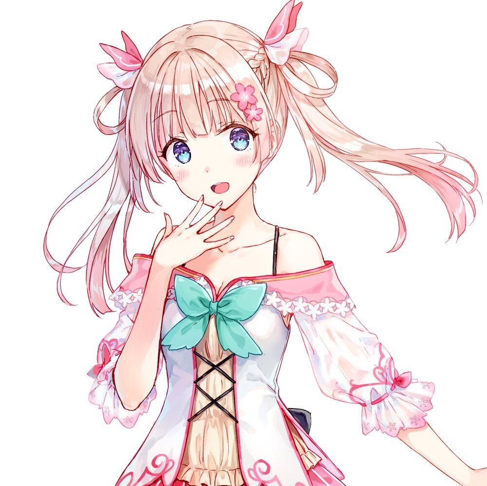
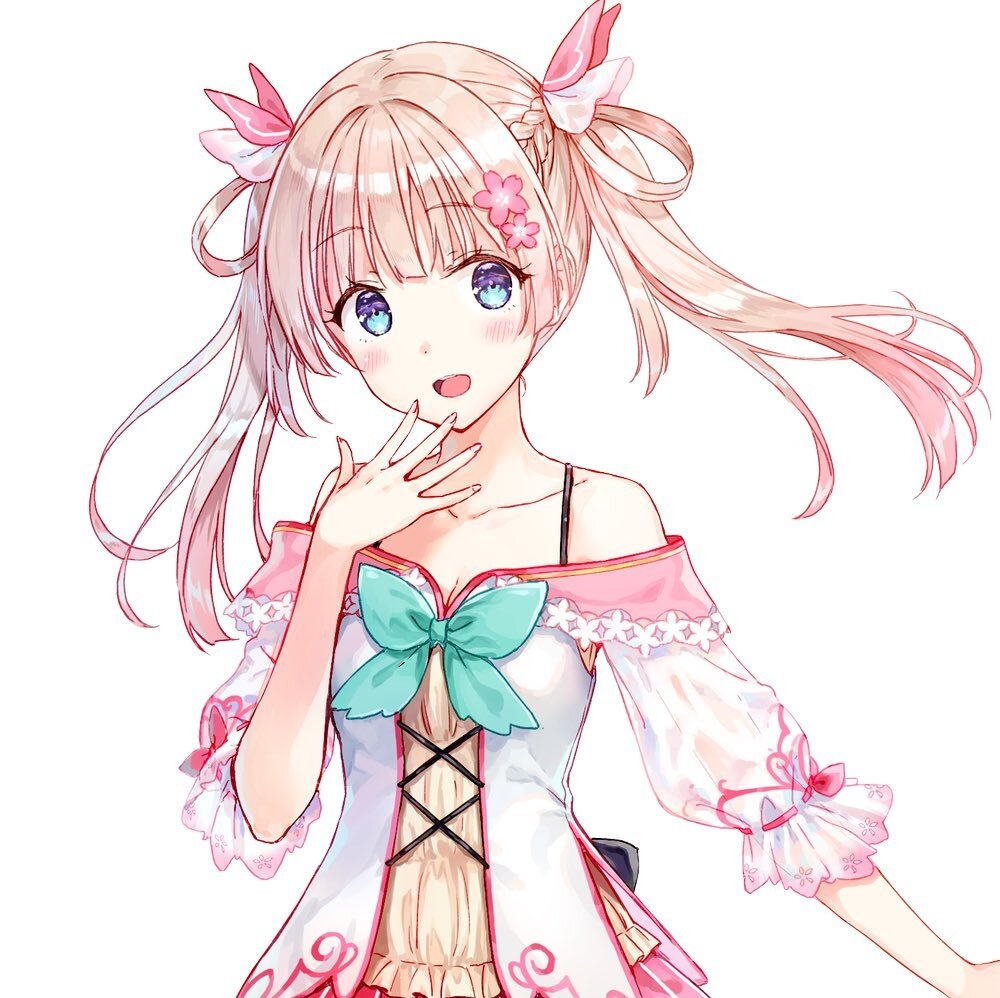

About Me
Hello, I'm Toan. Some people call me ToanShinoda a.k.a ToanShida, or ToanNobita, ToanChocola, ToanShizuka, etc...
Vietnam's IT industry is now at the forefront of development. It can be said that IT is the king of professions. Both have money, have power. Both earn a lot of money and be respected by society.
My Brother studied mechanical engineering, was born in 96. Self-taught to learn coding and then worked as a remote for an American company for 2 years now. Online 3-4 hours per night is done. Monthly salary 3k6$. But the main income is still from receiving outside projects. Doing 2 or 3 project every week, 9.10k, real money, no tax. Worked for nearly 3 years, but has bought home, car. Craving thinking about it.
Girls always get horny when he say working IT. There was a girl who was an Australian student, and was introduced by her sister to work as a VCB bank. That day, he went to open a credit card and encountered it, somehow he caught both sister and that girl. Three of them live in a luxury apartment. That girl's family knew at first that she objected, then she changed her attitude when she learned that he was studying IT, asked three times to visit, gave gifts for five days, and always urged her to get married lest she miss a good deal.


 
